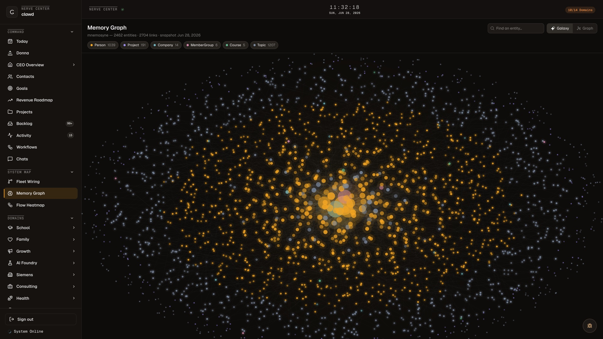

I lead product orgs, own the P&L, and run a production AI organization that ships while I sleep: 30+ agents in daily production, 100+ built over time.
BYU MBA class of 2027. Open to AI product and applied-AI leadership conversations now.
One CEO agent fans out to specialists across my life and work domains: 30+ agents in daily production, 100+ built over time. Roughly 200 durable workflows, a live memory graph, every layer designed and built by me, including the design system on this page.

587M tokens and 4,794 turns yesterday. Work volume through the system, list-price equivalent.
It runs in production, which means it breaks in production. I run it anyway, behind machine-enforced guardrails and a send gate that stops it. If you want the architecture, the failures, and the fixes: read the production teardown → The system also publishes its own census every day: see the live capabilities page ↗
No slideware. Every item here is a public repo you can clone or a URL you can open. The first row is one arc: the story, the system it came from, and the same controls packaged for an enterprise.
The artifact
Capability paired with the risk it carries, the control that bounds it, and the incident where the control failed anyway. Read the case study, then run the code it describes.
Every capability this organization has, the concrete risk it carries, the control that bounds it, the tradeoff I accepted, and one incident where the control failed and what changed as a result.
The production core as installable code: fleet fan-out under bounded concurrency, a durable message bus that dead-letters loudly, circuit breakers, best-of-N with an adversarial judge, and permission tiers from read to irreversible.
The same controls shaped for an enterprise: one policy chokepoint that defaults to deny, a destructive-command hook that holds even under skip-permissions, a fail-closed eval gate, and a redacting audit log.
The system behind it
A calibrated multi-persona LLM judge, exposed as an MCP server and shipped with the eval harness that proves the calibration. It names the four ways judges fail and tests for each one.
Point it at a repo and it triages, fixes in an isolated worktree, and proves red to green. Every fix clears blast-radius caps, a never-touch deny-list, and a three-seat adversarial review. Out of the box it can never merge.
The private system everything above came out of. It runs my actual life and work, so it stays closed. The receipts are open: a full teardown, and a capabilities page the system regenerates from live state every day.
A job search treated as a verification problem: one experience bank built from the resumes you already have, roles scored against goals you set, a resume tailored per posting and proven machine-readable. It does not apply for you. That is the point, not a limitation.
Also shipped
8+ years of product leadership: Principal PM at a Fortune 500, Deloitte, a funded startup as co-founder and CPO, and production AI at Siemens today.
Full history on LinkedIn →Open to AI product and applied-AI leadership roles, and to conversations about agents in production. No form.